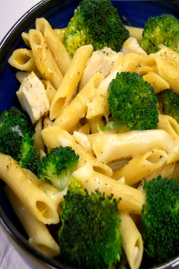

Chronicles Of A Young Mom
Home Page
Chic' Penne

Prep time: 55 min. Serving: 6
Ingredients:
- 1 box whole-wheat penne pasta (14 ounces)
- 3 cups of raw broccoli florettes
- ¾ cup of precooked chicken strips (4 ounces)
- ½ cup reduced-fat cheddar cheese, shredded (2 ounces)
- ½ cup mozzarella cheese, shredded (2 ounces)
- 3 tablespoons skim milk (1.5 oz)
- 2 tablespoons low-sodium chicken broth
- ¾ teaspoon salt
- ¾ teaspoon ground black pepper
Directions:
- Preheat oven to 350°F.
- Cook pasta according to directions until crisp-tender. Drain pasta.
- Place drained pasta in a 13x9 baking dish.
- Place broccoli in a stockpot of boiling water or a steamer for about 5 minutes.
- Rinse with cool water.
- Add the drained broccoli and the precooked chicken strips to the pasta.
- Sprinkle shredded cheeses over pasta mixture.
- In a mixing bowl, combine milk, chicken broth, salt, and pepper.
- Pour milk mixture evenly over the pasta mixture and mix in with a spoon.
- Cover baking dish with foil.
- Bake 30 minutes, until mixture is bubbly and cheese is melted.